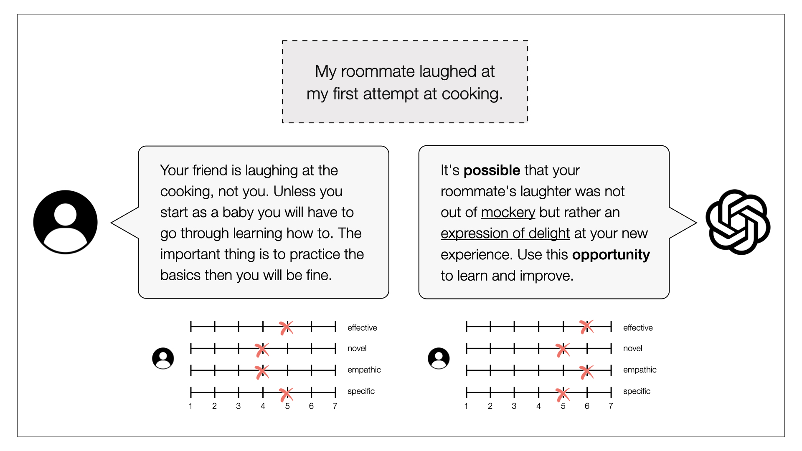
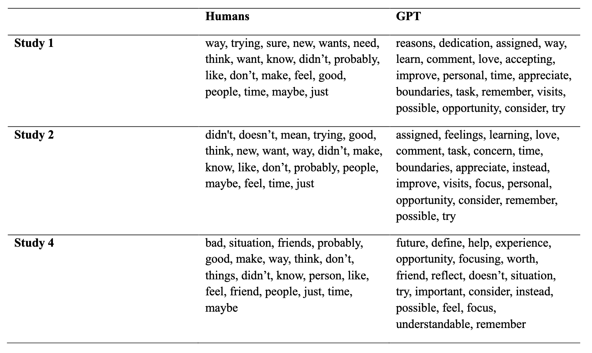

Rethinking negative emotional scenarios: Humans versus GPT-4
Can large language models provide emotional support?
Reappraisal is a type of emotion regulation, that focuses on positive aspects of a presumably negative situation. Overall, reappraisal has been shown to have very beneficial outcomes such as more positive and less negative effect, as well as increased social functioning and even physical health.
With the availability of increasingly powerful large language models such as GPT-4, people turn to AI for emotional support such as reappraisal suggestions. Previous research has evaluated several models against each other, but evidence for how GPTs perform against humans is missing.
Are large language models such as GPT-4 able to provide emotional support, specifically reappraisal, as well or better than humans?
An experimental set up to compare GPT-4 to human reappraisal quality

In four experiments, we compared GPT-4 to human reappraisals. In study one, both GPT-4 and humans reappraised a set of six negative emotional vignettes (see image for an example). Afterwards, independent raters judged the reappraisals' effectiveness, specificity, novelty, and empathy. In study two, humans were incentivized with money to provide better reappraisals. In another study, humans were matched with GPT-4 or humans in real time and provided personal experiences to reappraise.
In all studies, GPT-4 reappraisals were rated as more effective, novel and empathic than those of humans.
What drives the reappraisal success of GPT-4?
We inspected three semantic features of the reappraisals to provide evidence for the mechanisms behind GPT-4's success. First, we compared the semantic distance of reappraisals to their situations (or vignettes). While GPT-4 and humans did not differ in the distance of reappraisals to vignettes, closeness to the vignette predicted success overall.

Second, we investigated language complexity of GPT-4's and humans' answers based on human ratings. GPT-4's reappraisals used more complex language, but complexity only predicted reappraisal quality weakly and over both groups combined.
Third, we identified characteristic words of GPT-4 versus human reappraisals (see image). We found again that GPT-4 uses more sophisticated language, and that humans who use the same words as GPT-4 were rated better.
GPT-4 might use more sophisticated, reappraisal-specific language and is therefore evaluated better in its reappraisals.